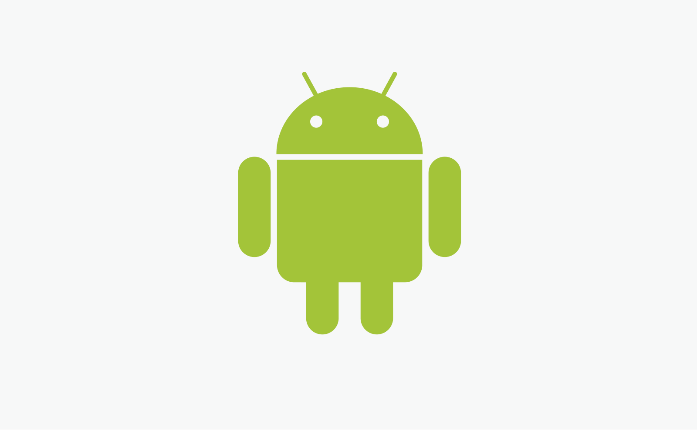

História do Mascote do Android
Provavelmente você sabe que o sistema operacional Android, mantido pelo Google é um dos mais utilizados para dispositivos móveis em todo o mundo. Mas talvez você não saiba que o seu simpático mascote tem um nome e uma história muito curiosa? Pois acompanhe esse artigo para aprender muita coisa sobre esse robozinho.
A Primeira Versão
A primeira tentativa de criar um mascote surgiu em 2007 e veio de um desenvolvedor chamado Dan Morrill. Ele conta que abriu o Inkscape (software livre para vetorização de imagens) e criou sua própria versão de robô. O objetivo era apenas personificar o sistema apenas para a sua equipe, não existia nenhuma solicitação da empresa para a criação de um mascote.

Essa primeira versão bizarra até foi batizada em homenagem ao seu criador: seriam os Dandroids. Acima você pode ver os quatro modelos originais que Dan criou para uma apresentação interna.
Surge um novo mascote
A ideia de ter um mascote foi amadurecendo e a missão de criar algo profissional foi dada à designer Irina Blok. A ideia principal da Irina era representar tudo graficamente com poucos traços e de forma mais chapada. O desenho também deveria gerar identificação rápida com o público e ser fácil de reproduzir.

Irina Blok, a designer russa radicada nos EUA que criou o icônico logotipo. Ela conta que a inspiração veio de pictogramas universais de banheiros públicos.

O resultado foi o Bugdroid, o robozinho verde que todo mundo conhece hoje. Ele foi inspirado em placas de sinalização de banheiros, aquelas que indicam o gênero masculino e feminino de forma simplificada.
O Bugdroid tornou-se um símbolo de liberdade, já que o Google permitiu que qualquer pessoa pudesse modificar o desenho do mascote como quisesse, seguindo a filosofia de código aberto do sistema.
Então é isso! Espero que você tenha gostado de conhecer um pouco mais sobre o robozinho mais famoso do mundo mobile.